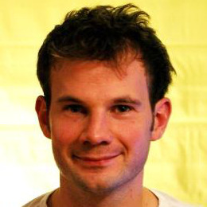
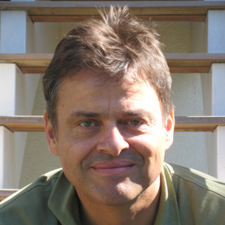

Speakers
We are excited to already be able to announce the following speakers:

Alastair Donaldson
Imperial College, leads the Multicore Programming research group. His work focuses primarily on software for multicore and manycore systems, since exploiting parallelism is nowadays the principle means for accelerating applications.
Sophia Drossopoulou
Imperial College, works on reasoning about programs, program composition, session types, ownership types, concurrency, and in general, programming language design and modelling. In particular, she participated in the design of the Pony type system.
David Edelsohn
CTO of GCC Technology, IBM Research. David is the maintainer of GCC port for PowerPC, a member of the GCC Steering Committee, member of the PyPy leadership team, and leads an Open Source software bounty program within IBM as part of an effort to infuse innovation into the Open Source software ecosystem for IBM Systems.
Suresh Jagannathan
Purdue, works on programming languages generally, with specific focus on compilers, functional programming, program verification, and concurrent and distributed systems.
Richard E. Jones
University of Kent, has written the book on Garbage Collection, twice, and is interested in memory management for high-level languages.
Niko Matsakis
Mozilla, is a senior researcher at Mozilla research. He focuses on safe support for parallelism in programming languages. He is currently working on the Rust programming language as well as Parallel JavaScript.
Heather Miller
Northeastern University, works on and around the Scala programming language.

Martin Odersky
EPFL, works on unifying object-oriented and functional programming in the Scala language.

Laurence Tratt
King’s College London, is a programmer and Reader in Software Development of the Department of Informatics, where he leads the Software Development Team.

Jan Vitek
Northeastern, led the implementation of the first real-time Java virtual machine to be successfully flight-tested. He works on gaining a better understanding of the JavaScript language and is now looking at supporting scalable data analysis in R.